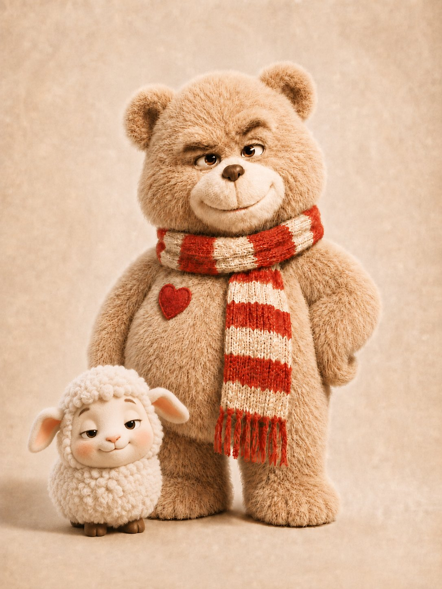
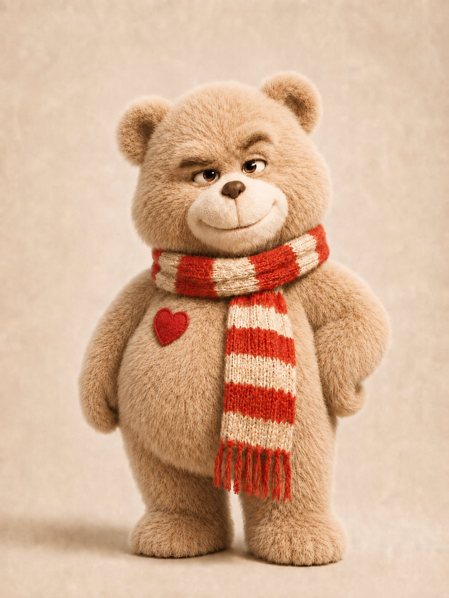
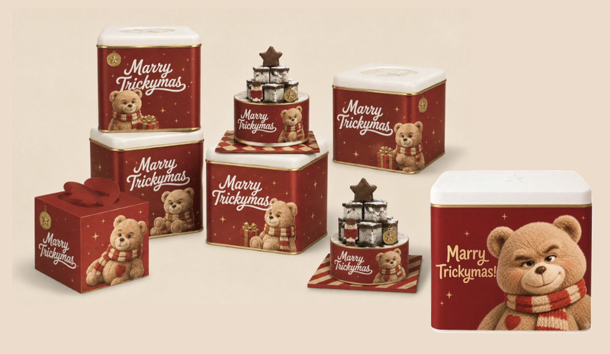
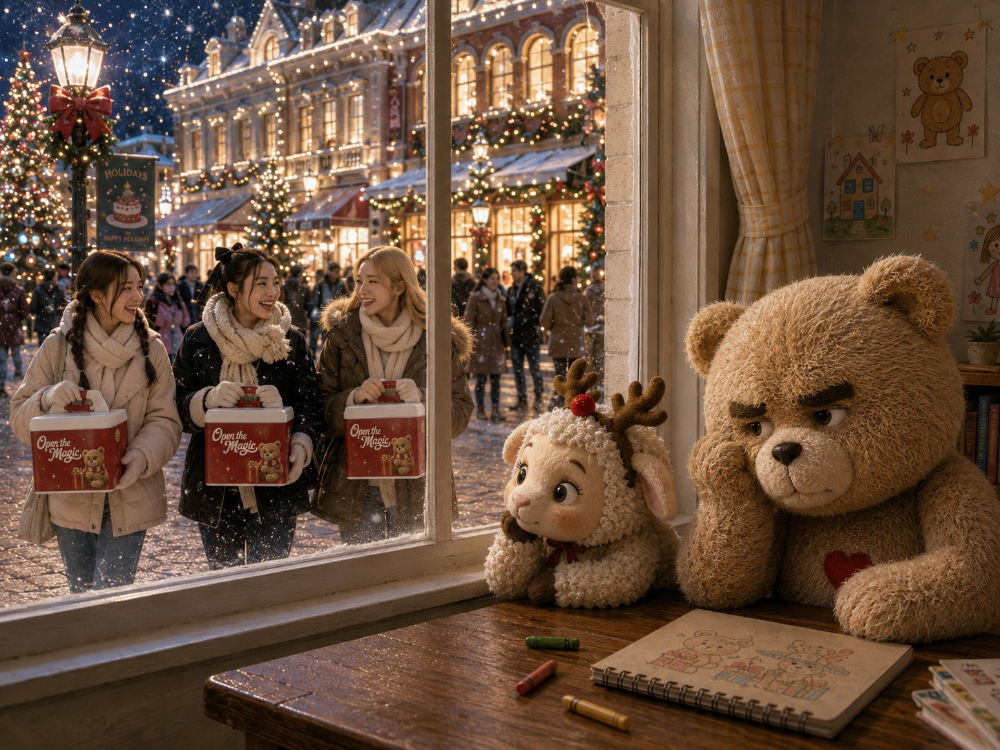
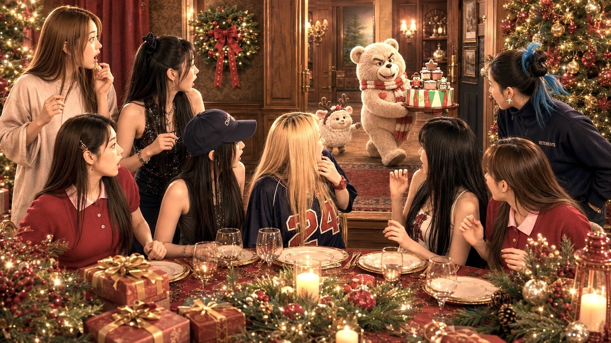
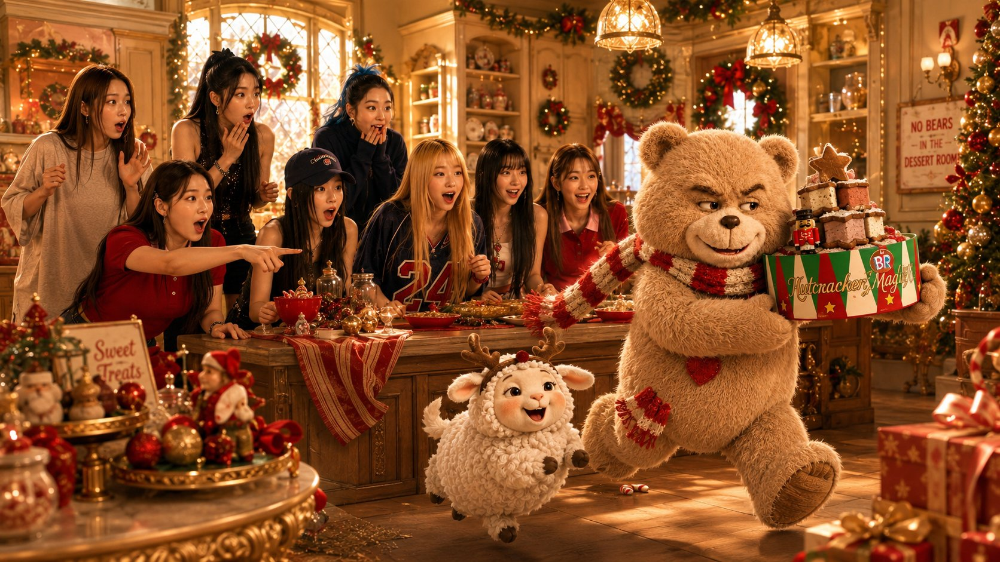

ConfidentialUnreleased campaign, shown for review only. Please do not share or distribute.미공개 캠페인으로 검토용으로만 공개합니다. 공유 및 외부 배포를 금지합니다.
Merry Trickimas — Trixter & Mellow Sheep
A holiday campaign built on two original characters: a bear who cannot keep his paws off the Christmas cake, and the small friend who helps him every time.크리스마스 케이크만 보면 참지 못하는 곰과, 매번 그 곁을 거드는 작은 친구. 두 오리지널 캐릭터로 만든 크리스마스 캠페인.



- Client
- Baskin-Robbins Korea
- Location
- Seoul, Korea
- Year
- 2026
- Role
- Creative Marketing Team Lead
- Scope
- Campaign concept, character development, story, key visuals, packaging, AI film production
- Characters
- Trixter & Mellow Sheep — created by Ahran Won
- Status
- Unreleased · Confidential
Every December, every dessert brand sells the same thing: a beautiful cake on a festive table. Baskin-Robbins’ ice cream cakes are the heart of its Christmas season, but the category had become a line-up of products that all looked alike.
So the campaign sells a story instead of a product, told through two characters I created for it. Trixter is a plush bear with a mischievous streak and a red-striped scarf, and he wants a Christmas cake more than anyone. Mellow Sheep, in her reindeer antlers, goes along with every plan. The question the campaign leaves behind is simple and easy to repeat: who took the cake?
The story moves from a quiet night at the window, watching people carry their cakes home, to a Christmas party where Trixter walks off with the Nutcracker Magic cake in front of everyone. The same two characters then carry through to the cake tins and gift boxes, so the story continues at home.
The characters, key visuals, packaging and film were all produced through an AI pipeline. That let the whole campaign be built, seen and tested as a finished piece before any production budget was spent.
매년 12월이면 모든 디저트 브랜드가 같은 것을 팝니다. 화려한 식탁 위의 예쁜 케이크. 배스킨라빈스의 크리스마스도 아이스크림 케이크가 중심이지만, 케이크 광고는 어느새 서로 비슷해 보이는 제품 나열이 되어 있었습니다.
그래서 이 캠페인은 제품 대신 이야기를 팝니다. 이를 위해 두 캐릭터를 직접 만들었습니다. 트릭스터는 빨간 줄무늬 목도리를 두른 장난꾸러기 곰 인형으로, 누구보다 크리스마스 케이크를 갖고 싶어 합니다. 루돌프 머리띠를 한 멜로우 쉽은 그의 모든 계획에 함께합니다. 캠페인이 남기는 질문은 단순하고 따라 말하기 쉽습니다. 케이크, 누가 가져갔어?
이야기는 창밖으로 케이크를 들고 가는 사람들을 바라보는 조용한 밤에서, 모두가 보는 앞에서 트릭스터가 넛크래커 매직 케이크를 들고 달아나는 크리스마스 파티로 이어집니다. 두 캐릭터는 케이크 틴과 선물 상자까지 그대로 이어져, 이야기가 집에서도 계속되게 했습니다.
캐릭터, 키 비주얼, 패키지, 영상은 모두 AI로 제작했습니다. 덕분에 제작비를 쓰기 전에 캠페인 전체를 완성된 모습으로 만들어 보고 검토할 수 있었습니다.
Characters Trixter and Mellow Sheep created and designed by Ahran Won. Concept, story, key visuals and film by Ahran Won.캐릭터 트릭스터와 멜로우 쉽은 원아란이 직접 만들고 디자인했습니다. 컨셉, 스토리, 키 비주얼, 영상 원아란.




To Be Continued...